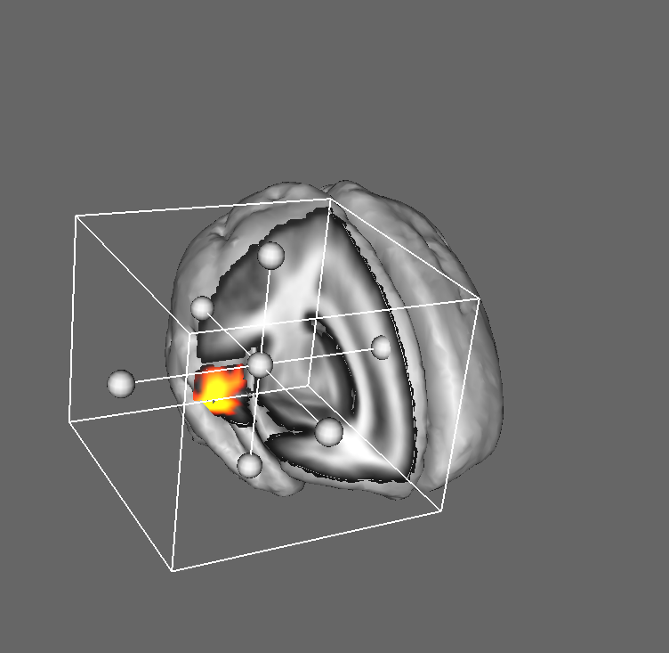
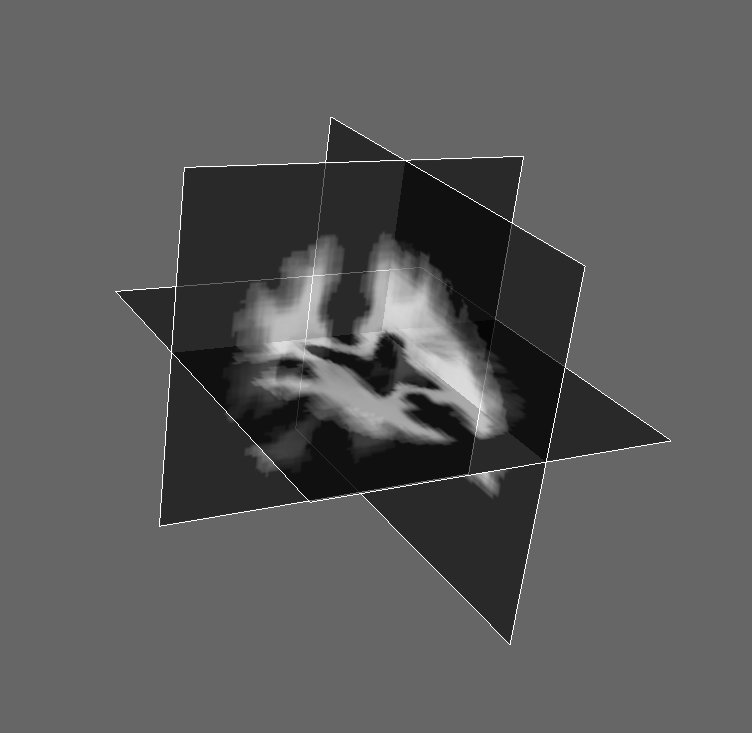

The options button(1) brings up a dialog window which can be used to control lighting and surface extraction parameters.
The camera button(2) saves a snapshot of the 3D view as a TIFF image.
Add a mesh to the scene(3) and modify mesh parameters(4).
Set the main image threshold(5). This value determines the threshold to be used when seperating out the surface usually used to represent the pial surface.
Turn on/off clipping(6). When on the clipping box can be used to cut into the volume and reveal the structures and surface inside.
| Key | Effect |
|---|---|
| r | Reset the camera position to centre all visible elements. |
| b | Toggle the viewing/manipulation of the clipping box. |
| w | View-as-wireframe. |
| s | View-as-solid objects. |
| x | Toggle the x-plane. |
| y | Toggle the y-plane. |
| z | Toggle the z-plane. |
| 3 | Turn on 3D stereoscopic pair rendering. You will need a pair of red/green goggles to view this mode. |
You can use the mouse to rotate, translate and/or zoom the camera in the given view. The mouse controls are as follows:
| left-button | Rotate the scene. Use the meta-key to rotate around the current display Z direction. |
| middle-button | Translate the scene. |
| right-button | Zoom the camera. |
The clipping surfaces and the control points can be used to translate, rotate, and scale the clipping box.
Grabbing the central control point allows the user to translate the box along the screen X and Y axes. The same effect can be acchieved with a mouse middle-click anywhere in the box.
Turning on these plane widgets allows you to sample arbitrary slices in the given plane. To move a plane along it's orthogonal axis use the middle button to select it then drag it to the desired position (Plane widgets are not fixed in plane and can be tipped by dragging them at the edge - a blue border appears when selected).
